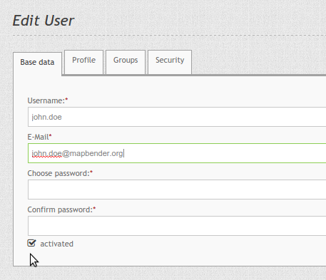
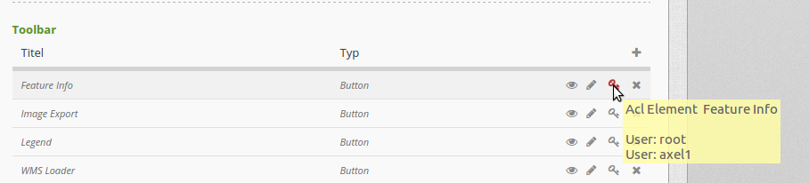

Benutzer¶
Benutzer werden als FOM\UserBundle\Entity\User implementiert und im Datenbank Repository gespeichert. Die Entität hält nur die notwendigen Informationen über einen Nutzer vor, komplexere Benutzerdaten sollten in Benutzerprofilen hinterlegt werden (TBD).
Das Bundle enthält alle Mittel um Benutzer durch einen Administrator zu verwalten als auch das eigene Registrieren eines Nutzes sowie das Zurücksetzen des eigenen Passwortes.
Der Benutzer mit der ID 1 ist besonders, da dieser Benutzer bei der Installation erstellt wird und immer alle Rechte hat. Falls alle Stricke reißen, können Sie mit diesem Benutzer alles verwalten. Und falls Sie gar die Anmeldedaten vergessen haben sollten, können Sie über ein app/console Kommando den Benutzer zurücksetzen: fom:user:resetroot.
Passwort vergessen¶
Falls ein Benutzer sein Passwort vergessen hat, kann er in der Login-Maske über den Link “Passwort vergessen” ein neues Passwort anfordern. Dazu gibt er dann seinen Benutzernamen oder seine E-Mail Adresse an.

Danach bekommt der Benutzer eine E-Mail mit einem Link, die zu der Seite führt, um das Passwort zurückzusetzen. Der Link ist danach nicht mehr gültig. Der Text der Mail kann in der Datei /FOM/UserBundle/Resources/translations/messages.de.xlf angepasst werden.
Die Funktionalität kann in der config.yml ausgeschaltet werden.
fom_user:
reset_password: true # true/false
Registrierung¶
Benutzer können sich an Mapbender3 selbst registrieren. Dafür stellt man in der config.yml die Einstellung fom_user:selfregister auf true.
fom_user:
selfregister: false # true/false
Im Login-Dialog erscheint der “Register” Link. Der Benutzer wird zu einer Maske geführt, in der er seinen Namen, sein Passwort und seine E-Mail Adresse angeben kann.

Danach erhält er eine Bestätigungsmail, mit der er seine Anmeldung abschließen kann. Bis zu diesen Zeitpunkt ist er als inaktiver Nutzer in Mapbender3 hinterlegt.
Die Texte der Bestätigungsmail können unter /FOM/UserBundle/Resources/translations/messages.de.xlf angepasst werden.
Aktivieren von Nutzern¶
Seit Mapbender 3.0.5.3. Benutzer können von Administratoren mit mindestens der Benutzer ACL-Rolle “edit” aktiviert oder deaktiviert werden. Dazu dient der Schalter im Edit User Dialog.
Ein Benutzer mit Administrationsrechten kann sich selbst nicht aktivieren oder deaktivieren.
Ein Benutzer, der deaktiviert ist, kann sich nicht mehr am Mapbender3 anmelden, bis er wieder aktiviert wird.

Benutzer, die sich selbst registriert haben, aber die Freischaltungsmail noch nicht bestätigt haben, können so von einem Administrator per Hand freigeschaltet werden.
Usermanagement über Sicherheitsschlüsselabfrage¶
Innerhalb jeder Mapbender-Applikation besteht zusätzlich die Möglichkeit der Rechtevergabeanpassung. Im Tab “Layouts” findet sich diese Einstellung in Form eines Schlüssels neben jedem Element.
Um anzupassen, ob jemand Zugriff auf das Element hat, muss zunächst auf den Schlüssel geklickt werden. Im Anschluss kann ein Nutzer hinzugefügt werden. Dies geschieht über das “+”-Symbol.
Ein gesetzter Haken neben dem entsprechenden Nutzeraccount erlaubt dem jeweiligen Nutzer den Zugriff. Der Schlüssel wird nach erfolgreicher Rechtevergabe rot. Wenn Sie nun den Cursor über den Schlüssel halten, sehen Sie die Namen der berechtigten Nutzer in einem Pop-Up Fenster.
Login Fehler¶
Fehlerhafte Logins werden mit der Meldung “Login fehlerhaft” kommentiert. Aus Sicherheitsgründen wird nicht genannt, ob es am falschen Loginnamen oder falschen Passwort liegt. Login Fehler schließen den Account nicht dauerhaft aus. Vielmehr wird der Account für eine bestimmte Zeit ausgeschlossen (gelockt).
Die config.yml ermöglicht die Anpassung des Verhaltens:
fom_user:
# Allow to create user log table on the fly if the table doesn't exits.
# Default: true
auto_create_log_table: true
# Time between to check login tries
login_check_log_time: "-5 minutes"
# Login attemps before delay starts
login_attempts_before_delay: 3
# Login delay after all attemps are failed
login_delay_after_fail: 2 # Seconds
- auto_create_log_table: Angabe zur Rückwärtskompatibilität (Default: true).
- login_check_log_time: Angabe zur Bereinigung der Login-Failure Tabelle (Default: -5 minutes)
- login_attempts_before_delay: Anzahl der Login Versuche, bevor das Login-Delay greift (Default: 3)
- login_delay_after_fail: Länge des Login-Delays in Sekunden (Default: 2).